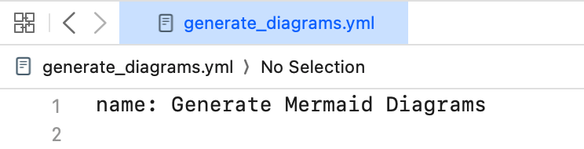
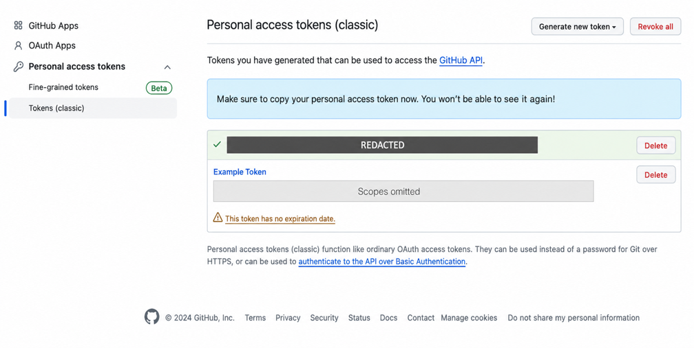
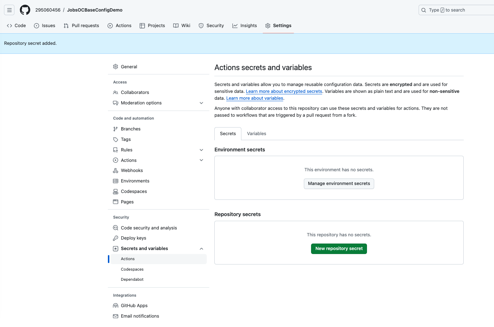
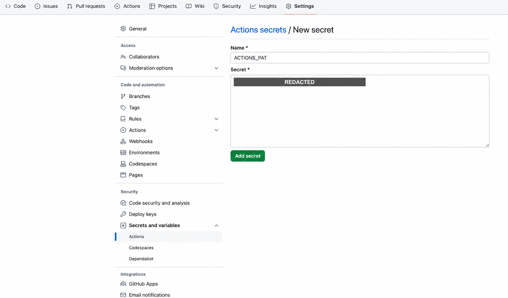

🔥 前言#
GitHub Actions 是 GitHub 的事件驱动自动化平台。它不仅能跑 CI/CD，也能做定时任务、发布、依赖更新、文档生成和仓库治理；权限、外部 Action、第三方依赖与不受信任 Pull Request 同时构成供应链边界。
一、核心模型 🔼 🔽#
| 概念 | 含义 | 关键边界 |
|---|---|---|
| Workflow | 一个 YAML 定义的自动化流程 | 文件必须位于仓库根目录 .github/workflows/ 才会被 GitHub 识别。 |
| Event | 触发 Workflow 的事件 | Push、Pull Request、定时、Release、手动触发等事件携带不同上下文和权限。 |
| Job | 一组 Steps | 多个 Job 默认可并行；用 needs 表达依赖。 |
| Step | 运行脚本或 Action 的最小编排项 | 同一 Job 的 Step 共享工作目录，环境变量不会自动跨 Step 持久化。 |
| Action | 可复用的自动化组件 | uses: 引入的代码也是依赖，必须审查来源与版本。 |
| Runner | 执行 Job 的机器 | GitHub-hosted Runner 通常为 Job 提供新环境；self-hosted Runner 会保留本机状态与更高风险。 |
| Artifact | 某次运行上传的产物 | 有保留期，不等同于 Git 提交或 Release 资产。 |
| Cache | 用于加速的可复用缓存 | 不应存储秘密，也不能作为唯一构建产物。 |
工作流路径：
<repository-root>/.github/workflows/<workflow-name>.yml本目录内的 .github/workflows/generate_diagrams.yml 是可复制的示例。因为它不在 JobsDocs 仓库根目录的 .github/workflows/，不会自动成为本仓库的有效 Workflow。
二、触发器#
on:
push:
branches:
- main
pull_request:
branches:
- main
workflow_dispatch:push.branches过滤被推送的目标分支。pull_request.branches过滤 Pull Request 的目标分支，不是来源分支。workflow_dispatch允许在 Actions 页面手动运行；工作流文件通常要存在于默认分支，界面才会提供入口。- 定时任务用 POSIX cron，时间按 UTC；调度可能延迟，不适合硬实时任务。
- 用
paths/paths-ignore时要理解 GitHub 的差异计算和文件数量限制，不能把它当绝对不会漏触发的业务审计器。
历史界面截图：


三、权限与凭据#
3.1、优先使用 GITHUB_TOKEN#
GitHub 会为每个 Job 自动创建短期 GITHUB_TOKEN，权限只在当前仓库和当前 Job 的授权范围内有效。对当前仓库提交生成物通常不需要个人 PAT：
permissions:
contents: writeactions/checkout 默认可以让后续 Git 命令继续使用该 Token；同仓库 git push 不需要把 Token 拼进 URL。
3.2、最小权限#
-
没有写入需求时显式写：
permissions: contents: read -
需要写入时只给具体 Job，而不是整份 Workflow。
-
来自 fork 的
pull_request不会获得普通仓库 Secret，GITHUB_TOKEN通常为只读；不要设计“PR 验证顺便推回主分支”。 -
pull_request_target运行在目标仓库上下文，可能持有更高权限。不能在高权限 Job 中直接 checkout 并执行不受信任 PR 的代码。
3.3、什么时候才用额外 Token#
可能需要 GitHub App installation token 或细粒度 PAT 的场景：
- 写入另一个仓库。
- 当前仓库 Token 没有目标 API 权限。
- 明确需要让本次自动化产生的新事件继续触发另一个 Workflow。
如果使用 PAT：
- 优先细粒度、限定仓库、最小权限和明确过期时间。
- 存入 Actions Secret，不写入 YAML、远端 URL、日志或截图。
- 个人 PAT 绑定个人账号生命周期；长期自动化优先 GitHub App。
- 一旦 Token 曾出现在截图、提交或日志中，先到平台撤销并轮换；只编辑当前文件不能清除 Git 历史、fork、缓存和旧构建产物中的副本。历史清理需要单独评估备份、协作者、开放分支与强制推送影响。
下面两张旧截图只说明历史界面，不是当前推荐流程。第一张已经脱敏；第二张“classic PAT + 广泛 scope + 无过期”应视为反例：


Repository Secret 历史入口：


四、第三方 Action 与依赖安全#
uses: owner/action@v7的 major tag 方便更新，但 tag 可移动；高安全场景固定到经过核验的完整 commit SHA。- SHA 固定不会自动获得安全修复，需要 Dependabot 或定期审计主动更新。
- 审查 Action 的所有者、仓库、发布、权限和源码，不使用来历不明的 fork。
npm install -g <package>不可复现。示例至少固定明确版本；正式项目优先提交package.json与 lockfile，再用npm ci。- 不在日志中输出整个
githubcontext、Secret 或含认证信息的远端 URL。
五、Mermaid 自动生成示例#
5.1、目标#
- Push、Pull Request 和手动运行都验证 Mermaid CLI 能解析输入。
- 只有
main的 Push 或在main上手动运行才写回生成图。 - Pull Request Job 只有读权限，不接触额外 Secret。
- 同一分支的并发发布互斥，避免自动提交相互抢占。
- 没有生成变化时正常结束，不让空 commit 导致 Workflow 失败。
5.2、工作流#
把本目录的示例复制到目标仓库根目录：
.github/workflows/generate_diagrams.yml关键配置：
name: Generate Mermaid Diagrams
on:
push:
branches:
- main
pull_request:
branches:
- main
workflow_dispatch:
concurrency:
group: mermaid-${{ github.workflow }}-${{ github.ref }}
cancel-in-progress: false
env:
MERMAID_INPUT: README.md
MERMAID_OUTPUT: diagram.png
MERMAID_CLI_VERSION: 11.16.0截至 2026-08-04，示例使用 actions/checkout@v7、actions/setup-node@v7、Node.js 24 LTS 和 Mermaid CLI 11.16.0。版本会演进，维护时必须重新核对上游，不只修改日期。
5.3、输入要求#
Markdown 输入必须包含合法的 Mermaid fenced code block：
```mermaid
flowchart LR
A[Source] --> B[Rendered Diagram]
```- 没有 Mermaid 图块时，应该让工作流输出明确提示，不把“必须凭空生成图”写成 CLI 的责任。
- 一个 Markdown 有多张 Mermaid 图时，CLI 可能生成带序号的多个输出；暂存路径要覆盖
diagram*.png。 mermaid.md是复杂输入样例，不代表 GitHub Actions 知识本身。
六、写回仓库的安全实现#
6.1、不要把 PAT 拼进 URL#
错误方向：
https://<actor>:<token>@github.com/<repository>.git它可能进入进程参数、错误输出、Git 配置或日志。当前仓库写入应使用 checkout 已配置的 GITHUB_TOKEN 凭据，然后直接：
git push6.2、只提交真实变化#
mapfile -d '' generated_files < <(find . -maxdepth 1 -type f -name 'diagram*.png' -print0)
if (( ${#generated_files[@]} == 0 )); then
echo 'No generated diagram files.'
exit 1
fi
git add -- "${generated_files[@]}"
if git diff --cached --quiet; then
echo 'No generated diagram changes.'
exit 0
fi
git commit -m 'docs: update generated Mermaid diagrams'
git pushgit commit在索引无变化时返回非零；自动化要把“无变化”视为正常分支。- Bash 数组配合 NUL 分隔输入，既兼容空格和特殊字符，也显式处理“没有生成任何文件”的异常情况。
- 工作流自动 Push 使用仓库
GITHUB_TOKEN时，通常不会再次触发普通 Push Workflow，从而避免递归运行；如果改用 PAT 或 GitHub App token，必须重新设计防递归条件。
七、本地验证#
7.1、直接验证命令#
node --version
npm --version
npx --yes @mermaid-js/mermaid-cli@11.16.0 \
--input README.md \
--output diagram.png7.2、act#
act 可以在本地用容器模拟部分 GitHub Actions：
brew install act
act --list
act workflow_dispatchact不是 GitHub 官方 Runner，镜像、事件、权限、服务容器、OIDC 和托管环境细节可能不同。- 本地通过不能证明 GitHub-hosted Runner 一定通过；最终仍要在目标仓库验证。
- 测试 Secret 使用专门的测试值，不能把生产 Secret 写进命令历史或普通文件。
八、常见故障#
| 现象 | 原因方向 | 处理 |
|---|---|---|
| Workflow 不显示 | 文件不在仓库根 .github/workflows、YAML 无效、默认分支未包含文件 |
查路径、Actions 页面和 YAML。 |
| 手动运行按钮不存在 | 缺 workflow_dispatch，或 Workflow 未进入默认分支 |
提交到默认分支并刷新。 |
Resource not accessible by integration |
GITHUB_TOKEN 权限不足或事件被降权 |
查 Job permissions、fork PR 和组织策略。 |
| PR 能生成但不能 Push | PR Job 只读，这是预期安全边界 | 把发布拆到受信任的 Push Job。 |
git commit 返回 1 |
没有暂存变化 | 在提交前用 git diff --cached --quiet 分支处理。 |
| Push 被保护分支拒绝 | 分支保护、Ruleset、必需审批或签名策略 | 改为创建 PR，不能靠 Token 绕过。 |
| Mermaid CLI 找不到浏览器 | Puppeteer/Runner 依赖、CLI 版本或沙箱问题 | 先使用 CLI 官方安装策略与 GitHub-hosted Runner；不要随意关闭所有沙箱。 |
| 自动提交形成无限循环 | 使用了会触发新 Push 事件的 PAT/App token，且无条件限制 | 改用 GITHUB_TOKEN 或增加 actor、路径、消息和并发保护。 |